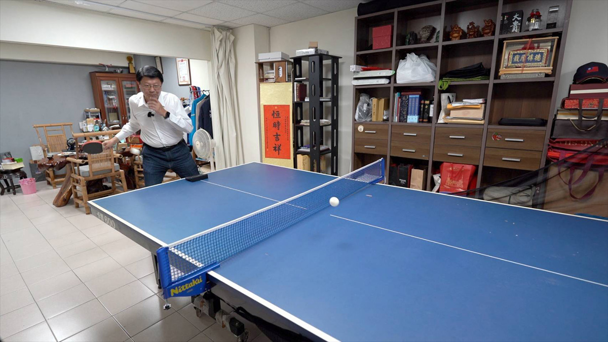
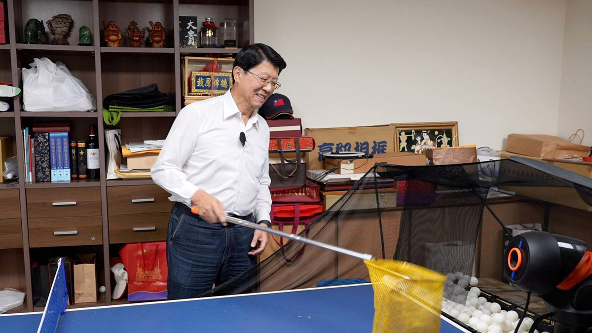
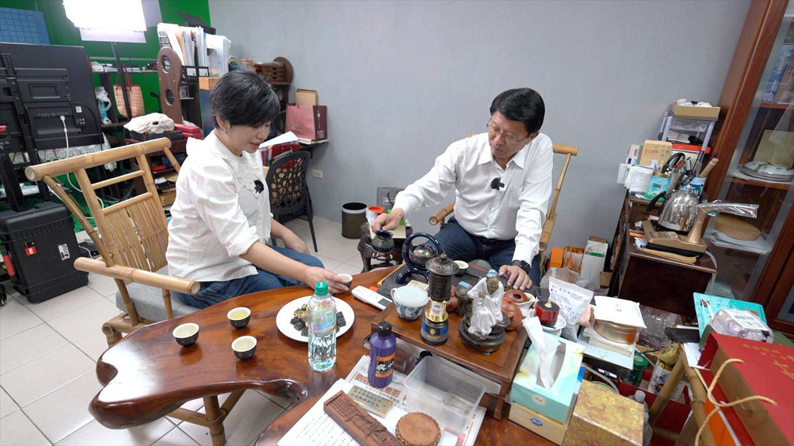
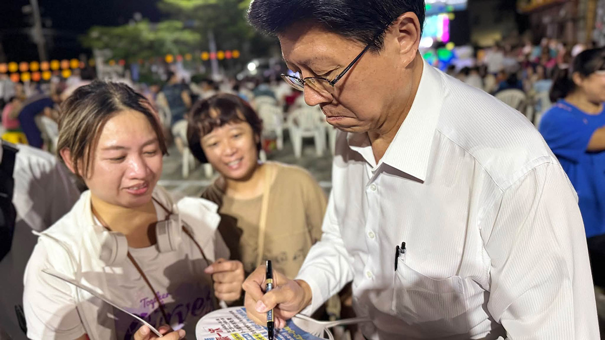
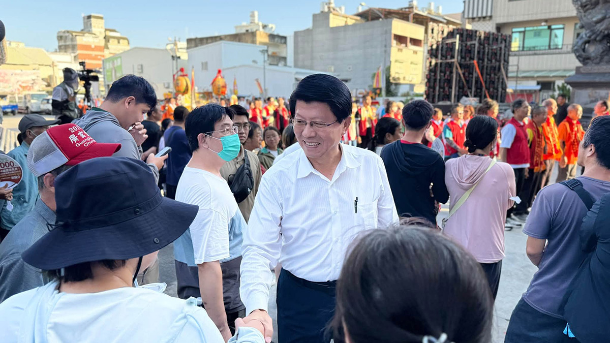

他的城市考題
謝龍介
給答案可以很快，城市治理什麼都能馬上辦嗎？
◎ 報導／呂佳頴
◎ 攝影／柯勝雄
◎ 部分圖片／謝龍介FB
他的城市考題
◎ 報導／呂佳頴
◎ 攝影／柯勝雄
◎ 部分圖片／謝龍介FB
2026年10月
有桌球桌、茶桌和直播設備的祕密基地
每個人都有自己的祕密基地。不管真實存在或虛擬空間，在祕密基地裡，是一個既能放鬆，又能讓你思考未來的地方。
那天，謝龍介就和我們約在他台南的祕密基地，其實就是他的直播間，裡頭有泡茶桌，很正常。為什麼說正常？因為《佳頴T政步》第一集（2025年10月18日播）來賓就是謝龍介，當時他說，自己靠泡茶體悟人生，心情好壞都要泡茶。
那次，我們在他立法院的辦公室邊泡茶邊聊天，他緩緩說出自己曾被朋友騙20萬元的故事。那是我們從人性、政策，到詐騙現場，一連三集反詐策展的首部曲。所以祕密基地當然要有泡茶桌，只是我一進門，最顯眼的不是茶，是桌球桌，還有發球機。

▲ 謝龍介在台南有個祕密基地，是他直播、思考和沉澱的地方。只是一進門看到的竟然是桌球桌和發球機，他說球來就打，可以練體力，也能和自己獨處。（圖／柯勝雄攝）
謝龍介說，曾經去桌球比賽開球，結果被小學生「電爆」。痛定思痛，買一台發球機回來，自己練。我笑問：「「真假？」然後伸出手往桌上摸說：「檢查看看有沒有灰塵，你不是說平常真的會打？」結果，桌面乾乾淨淨平常真的有在打。機器一開，球一顆接一顆飛出來。謝龍介開始認真地左揮、右打。
「欸，幹嘛都不說話？」他「蛤」了一聲，當作回話。緩口氣後才說：「這沒那麼容易，要練過。」後來，我們坐下來泡茶，腦袋裡一直是剛才那台發球機。因為謝龍介講起他想要的市政府和這有一點像——「球來了，就打回去」。

▲ 謝龍介拿出網子撿球，不然一直彎腰很累。（圖／柯勝雄攝）
一坐上泡茶桌，他便很自然地介紹起眼前準備沖泡的茶葉。「這二七仔（台茶12號的俗稱），金萱啦，喝起來有牛奶香。」他自顧自地說。我忍不住好奇：「金萱就金萱，為什麼還要叫二七仔？」他回話說：「二七仔，就是品種名稱。」這段一問一答，大概只算是茶葉小學堂的入門對話。
「還是一樣靠喝茶紓解心情嗎？」他微微點頭。我接著問：「最近選舉壓力大不大？台南綠大於藍，怎麼辦？」「我只做四年。」謝龍介在短短一分鐘內說了三次。一般市長任期四年，可以競選連任，他卻說，如果選上，只做一任。理由不是年紀，也不是做完就想退休，是認為市長只要沒有下一次選舉的壓力，就不用想著：這件事做了，會不會得罪人？
「我沒有連任的壓力，所以不怕得罪人，該做就做。」還說：「就是四年做八年的工作。」謝龍介講話的節奏，的確讓人聽起來很爽快。問題丟過去，很快就有答案，就像發球機一直射過來的球一樣。

▲ 謝龍介說心情不管好不好，都要泡茶，問他選舉壓力大嗎？他回有熱情就不會。（圖／柯勝雄攝）
停車、騎樓、老人、年輕人、紅單、水溝蓋⋯⋯幾乎沒有什麼題目可以讓他的話突然停下來。
他想像中的市政府也是這樣，沒有一層一層往上報。他說，如果當上市長，星期一到星期五晚上都要直播。市長、副市長、局長一起輪流上線，直接面對市民 Call in。理由很簡單：市民講了，能做的，明天就做，還說這就叫「馬上辦。」
請他現場模擬當上市長的第一天要怎麼直播。謝龍介一開口就是：「沒有等待期、蜜月期、空窗期啦，就從今天開始。」他說就是不喜歡等。謝龍介厲害的地方，不是把問題講得很複雜，是把一件事講到人馬上聽懂。
沒人喜歡打1999之後石沉大海；也沒人喜歡一件小事在公文裡旅行。謝龍介很直覺地說：「市民在當市長，我只是市民的執行長。」
市長接Call in反映問題，直接好懂，也很有畫面，但是市政府和桌球發球機，終究不一樣。球來了，可以立刻打回去。但市政裡，有些球不能只問快不快。
還要面臨「誰優先？為什麼他先？預算在哪？法律容不容許？解決了A的問題，會不會同時傷到B？」城市是不是每件事都能馬上辦，謝龍介說他知道，但會盡力。

▲ 謝龍介喊只做四年，生育政策不只發補助，還要供房子。（圖／取自謝龍介FB）
談到台南市的出生率，謝龍介說，低到不行。他幫我倒了杯茶，然後丟出一個很大的答案：「你生孩子，我供你房子。」，且補充說：「是供，不是租。」他講的是讓年輕人用比較負擔得起的方式取得住宅，而且有產權，可以繼承，但限制進入一般市場炒作。
「市府出土地，拿掉土地成本後，只算蓋房子的成本，再把房子賣給年輕人。」不然，現在年輕人的薪水，根本追不上房價。

▲ 謝龍介說，若當選後一周五天晚上都要直播，馬上解決市民的問題。（圖/取自謝龍介FB）
聽著聽著，想到另一邊。「這樣房價不是會下來一點嗎？」他說，跟房價無關，是讓年輕人先安居樂業。我又問：「可是有房子的人，絕對不會希望房價掉，對不對？」「沒錯。」他說。
然後呢？要怎麼平衡？他接著講申請者的排序，年輕人之後還是可以買商品房，父母也可以幫忙。這算不算政策買票？這題是他自己起的頭。他接著說，不然要機器人滿堂嗎？以後變成機器人泡茶給你喝？他強調，或許是下猛藥，但目的就是要讓年輕人敢生。
「你生孩子，我供房子。」八個字，聽起來比一篇住宅白皮書有力太多。但真正困難的，偏偏就在第九個字以後。如果一個住宅政策真的大到足以改變市場，它碰到的就不只是「年輕人買不買得起」。還有既有屋主的資產期待。這兩群人的利益衝突，怎麼辦？社會溝通要怎麼做？這顆球謝龍介沒有真的打回來。
「馬上辦」做法當然很迷人。尤其在一座城市裡，每個人都有被小事卡住的經驗。紅線、騎樓、水溝蓋、停車位、罰單、老人走路、年輕人買房、孩子出生後住哪裡。這些事情看起來很小，卻是人民心中的大問題。謝龍介抓得住這一點，他不是那種聽到民怨就繞開的人。有人丟球，他接、有人抱怨，他回、有人問，他給答案。
以前對謝龍介最鮮明的印象之一，就是會講，台語說得「漂亮」，反應快。這次坐在他的祕密基地裡，看到更深一點的東西。他不只會講，他還很習慣立刻找答案。但一個很習慣快速找到答案的人，碰到沒有辦法快速回答的城市難題時，會怎麼辦？這才是台南要問他的事。
治理一座城市，有些球飛過來時，或許不能急著出手。因為你得先看清楚：球的另一邊，站著誰。台南也不是一台桌球發球機，不是球來了，打回去，就算解決。那個喊出「馬上辦」的人，遇到不能馬上辦的事該怎麼辦？台南要看的，不只是誰最會把話講得痛快，是答案來得很快之後，治理能不能跟得上。

從競爭中突圍的人，能不能讓不同地方、派系與世代重新走在一起？

直率的真實，能轉換成市民的治理信任嗎？

一路把每一棒跑好的人，能不能跑出自己的路線？

習慣把答案整理清楚的人，能面對沒有標準答案的台北嗎？

看見缺口的人，能從台北的各種「可是」裡找到方向嗎？

會維修城市的人，能想像「城市」嗎？

跑遍新北的人，能不能把腳印走成方向？

擅長管理複雜系統的人，能讓快速長大的桃園產生共同方向嗎？

熟悉制度的法律人，能找回「消失的4分鐘」嗎？

看懂產業布局的人，能不能看見每一種人的生活？

地方跑得久的人，能不能跑出城市方向？
新聞部
副總經理 王結玲
議題研究中心／呂佳頴
採訪中心攝影組／柯勝雄
網路新聞中心／楊致中・談雍雍・吳家瑜
數位事業部
內容策展組／廖玉貞・彭嘉儀・林佳瑤・李佳綺
© TVBS Media Inc. All Rights Reserved.｜聯利媒體股份有限公司